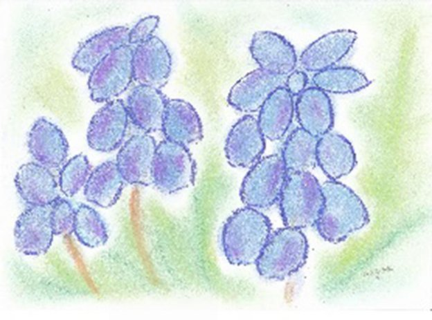
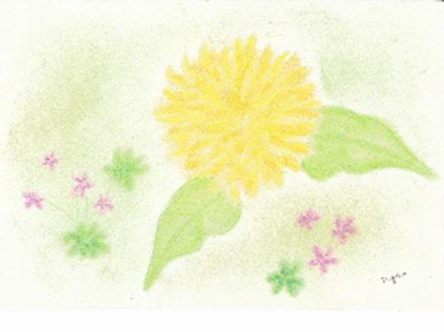
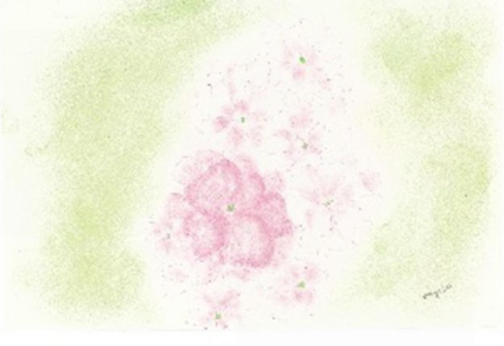
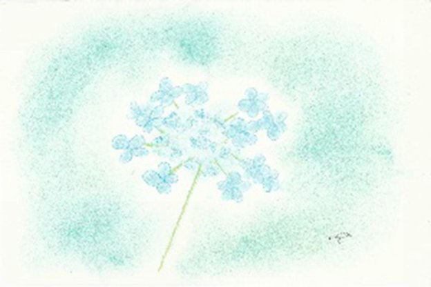

| 「悲しみ」とのつき合い方: 〜大切な人が亡くなった時に読む本〜 | |
| 星川 碧 | |
| DBpublishing (2015) | |
「会わせたい人がいるなら〜すぐに会わせて下さい！！」
・・・・？・・・？
主治医のその言葉が、非現実的だと感じたわたしは、二人だけの時に、
「今一番何がしたいの・・・？」と尋ねてみた。
間髪を入れず 「明日の夢が見たい！！」 と答えた兄。
彼のもっともっと生きたいという魂の声に、私の胸がアドバルーンのように膨らんだ。
明日の夢って・・・？
「免許書き換えないと運転ができないよ！！」・・・？！ ・・・？！
うんうん！！書き換えよう！！
それから間もなく雪景色の厳寒の午後、願い通り免許証の更新を果たした兄の満足げな表情に胸が熱くなった。
そしてそれから、ゆうに半年という時間を生き抜いて、数えきれないありがとうの言葉を置き土産に、満点の星空の夜に魂のふるさとに還った。
今がどんなに辛く、苦しく、絶望的でも、夢や希望を持つことの大切さを、今がどんなに過酷な境涯にあろうとも、誰かに勇気や希望や学びを与えられるということを、そして今この時に命があることの奇跡と全てのことに感謝することの大切さを、身をもって教えてくれた兄・・・
「俺の人生50年だったなぁ～」という言葉が兄と交わした最後の言葉
その兄が本書を書くきっかけを作ってくれました。
大切な人との別れは、自分自身の存在を根底からゆさぶられるほどの大きな衝撃を与え、このままでは自分が保てないという恐怖感さえ覚えるほどの強烈で深い悲しみを与えるものです。
しかし時が過ぎて振りかえれば、兄や両親そして友人との別れを通して、 大切な人との死別の悲しみは、今の自分に成長するために必要な体験だった と素直に思えるようになりました。そして「今が一番幸せ」と言える境涯を手にすることが出来ました。
人生は山あり谷あり、苦しい事も悲しい事も嬉しい事も、全てがあるからこそ幸せなのですね。
苦しみながらもある程度の覚悟が出来る別れもありますが、多くの場合別れはある日突然やってきます。大切な親友の訃報もある朝、前触れなく届きました。
余りの衝撃に何が起きたのかわからず、しばらくの間、まさに呆然自失状態で声さえもでない自分がいました。
死別の悲嘆で瀕死の深手を負った時、いつでも、誰でも、遠慮することなく、駆け込める緊急の避難場所が欲しい。誰でもいい、誰かと話したい。
長い間心の支えとしていた友を、突然の事故で失ったその時ほど、そう思ったことはありませんでした。
援助の手を求めて慣れない手でネット検索をしてみましたが、やるだけ虚しい作業に気がついたら夜が明けていました。
兄の時もそうでしたが、このような事態が来るとは誰も思っていませんし、誰にとっても全てが初めての体験ですので戸惑い苦しむのは当たり前のこと・・・
別れの準備が出来ている人なんて誰一人いません。
それでも、 万一の時の道しるべがあれば、どんなに些細なものであったとしても、それを頼りにして自分で向き合うことが出来るのに！！
どうしてないの？？ ないのなら〜自分が作ればいい！！
そんな思いがこの本を書く原動力になってくれました。
不器用でいつもつまずいてばかりの人生を歩んできた私ですが、深い悲嘆と向き合う手立てとして、実際に使って効果的だと思う方法だけをご紹介しています。
Midori流 体・心・魂との付き合い方です。
えっ～！？ こんなことでいいの？！
いいんです！！こんなことでいいのです！！
あなたの心に響いたところ、あなたがこれならできると感じたところが、今あなたが必要としているものです。
あなたの悲しみの度合いや時期によって必要な内容が異なるのは当然のことですから、 無理なく心に入るところだけ選んで他のところは読み飛ばして下さいね。
この本が、大切な人を亡くして今悲しみの只中にいるあなたや、これから身近な人の死を迎えられようとしている方、そしてその方のご家族やご友人、そしてそのような状況にある方々の看護や介護に日夜携わっておられる、看護師さんや助産師さん介護士さん達の小さな灯りになってくれることを祈って・・・。
目次
グリーフという言葉は多くの方にとって、おそらくあまりなじみのない言葉だと思いますので、ここではまず概略について説明をしておこうと思います。
グリーフ【grief】とは、死別による悲嘆や深い悲しみを意味する英語です。
そして、配偶者や子供さん、ご両親やご兄弟、親しい友人、あるいはペットを亡くした時に陥る強くて深い悲しみを受け入れて、現実の環境の変化に適応してゆくプロセスを支援することをグリーフケア【grief care】と言います。
このグリーフケアは、悲嘆ケアや遺族ケア【bereavement care】とも称されますが、グリーフのプロセスをグリーフワーク【grief work】
その支援者を「グリーフケアアドバイザー」等と呼ぶのが一般的です。
落胆や絶望体験を伴う遺族等のグリーフは、一般的に段階を踏んで進むと言われ諸説ありますが、ここでは最もシンプルな考え方をご紹介します。
一、ショック期：激しい衝撃を受けて茫然として無感覚やパニックに陥る。きっと何かの間違いに違いないと現実を否認する。
二、喪失期：死を現実のものとして受け止め始めはしますが、様々な感情が入り乱れる。
三、引きこもり期：死を受け止めることができた段階で、うつ傾向や無気力な状態になる。
四、再生期：あきらめと共に悲しみが消えるわけではないが、新たな人生に向って歩み始めることが出来る。
グリーフの反応は人それぞれですので一概には言えませんが、次のような反応が出ることを知っておくとよいでしょう。
◆ショック→否認→怒り
えっ!! うそ!! どうして!! ほんとう!!という強い感情が沸き起こります。
茫然自失、何が起こったのかわからない。何かの間違いに決まっている。どうしてこんな目に合うのか。なんで私だけなの。
◆純粋な悲しみ：何をしても何を見ても〜ただ涙と悲しみがこみあげてひたすら悲しい。
◆思慕：夢でもいい、幽霊でもいいから会いたいという強い思い。
◆孤独/疎外感：誰もこの苦しみをわかってくれない。周りの人が自分を憐れんでいるのではないかと思う。友人の幸せそうな姿が恨めしい。もう会えない一人ぼっちだ。
◆後悔/罪悪感：もっと優しくしてあげればよかった。もっと早く気づいて病院に連れて行っていればこんなことにはならなかったかもしれない。
私だけ生きていては申し訳がない。
◆不安/恐怖：この先どうやって生きていけばいいのか。全てが虚しい。もう二度と立ち直れない。なんの希望も持てない。
このような反応は正常な心理反応であり、自然にゆっくりと回復へ向かうのですが、
「いつまでもめそめそしていないで忘れてしまいなさい」というような強い言葉かけを、配偶者や親からされる等、悲嘆反応を過剰に抑圧しグリーフワークが正常に行われない場合は、不眠や食欲不振といった体の変調をきたす場合があります。
また病的悲嘆といい、パニック障害や過敏性大腸炎等の精神的身体的な疾患を伴って長期化する場合もあります。
悲嘆反応は思慕の感情や疎外感のような反応と、いつまでもこうしてはいられなという理性的反応との狭間で常に揺れ動いています。
また、当然のことですが悲嘆反応の表現には、死生観、生育環境、亡くなった方との生前の関係、宗教的背景、死因、死別者の年齢、社会的支援の有無等...多くの要因が絡んでいて個人差がとても大きいのです。
ですから死別で深く傷つき現実生活への適応能力を失うほどの方から、はた目にはそのような反応を知ることが殆どできない方までいらっしゃいます。
そして、先程示したグリーフのプロセスも一律に一直線に進むことがないことも、心にとどめておきたいものです。
グリーフのプロセスをグリーフワーク【grief work】と呼びますが、
それでは グリーフワークとはなんなのでしょうか??
グリーフは喪失に対する自然な反応ですが、グリーフワークは深い悲しみを癒し現実の生活に適応する作業であると表現することが出来ます。
しかし、この作業は一定の決められた方法があり、それを一生懸命やれば適応が完了するという性質のものではありません。
喪失という現実に向き合い、あなたの思いを素直に語り、亡くしたものに対する執着や現実生活への対処行動を繰り返しながら、大切な人との関係を見直し適応状態に近づけていく過程のことです。
つまり、グリーフワークという特別な活動があるわけではないのですね。
親しい人に話を聞いてもらうことや、日記を書くこと、あるいはアルバムの整理など、日常的なことを丁寧にする時間の流れの中で、 悲しみと共に生きられる自分になるまでの日々の暮らし をグリーフワークと言うことができます。
グリーフワークの過程を行ったり来たりしながら、今はとてつもなく強く嵐のように渦巻く感情の波に呑み込まれていたとしても、いつかはその悲しみの大きさと質が変化して悲しみと共に生きることが出来るようになるのです。
今は、この状態が一生涯続くような頼りなさと不安感で一杯になり、それが恐怖に似た感情をもたらしているかもしれません。
ですから、この苦しみが軽くなる日が来るなんて到底信じられないかもしれませんが、決して絶望することはありません。
癒しの過程は、目に見えないほど緩やかで心もとなくて時間がかかるかもしれません。それでも、着実に歩みを進める性質のものなので、焦らずにその過程を進みましょう。
哀しみは、一定の時間を経過すれば弱まるという話をする方もいらっしゃいますが、死別の悲嘆と上手くつき合っていけるようになるには、 人それぞれに必要な時間があり、人それぞれのペースがあるという事を心に止めておきましょう。
そして、どんなにあなたを大切に思っていても愛していても、誰もあなたの代わりにグリーフワークをしてあげることはできないという事も心に止めて置いて下さいね。
まして、病院に行ってお薬をもらったとしてもお薬で悲しみが癒えることは決してありません。時間がかかっても 、 喪失の事実を受け止めて自分の足でグリーフの過程を歩むことです。
それが悲しみを癒すただ一つの道なのだと心得て欲しいのです。
大切な人を失った現実を受け入れることは、誰にとっても口でいうほど容易ではないことをまず理解しましょう。
悲しみに蓋をして、なかったかのように振る舞ったり、私は平気なのと言って明るくすることで、一時的に喪失の痛みから逃げたとしても、いつかは必ず自分の力で向き合う必要があります。
悲しみ、後悔、失意、怒り、罪悪感等、湧き上がる自分の感情はどのようなものでも、受け入れて表現する事を恐れないことです。
自分自身の感情がコントロールできない、泣くのはみっともない、弱い人間だからと自分を責める必要はさらさらありません。
悲しい時は悲しい自分を認めてあげることでとても気持ちが楽になります。
時に想像もしていなかったようなネガティブな感情が湧き上がる事もありますが、そういう感情も素直に受け止めて見ましょう。
あなたが、弱いから悲しいのではなく正常な反応であることを知って、悲しんでいる自分を卑下したり隠すのではなく、そういう自分を認めて上げて下さいね。
行き場を失ったマイナスの感情は体の調子まで崩してしまいかねません。周りの方に悲しい思いをさせないようにという気遣いで、感情に蓋をする必要はないのです。
むしろ素直に出すことの方があなたにとっても周りの人にとっても助けになるということを知っておきましょう。
また、他人の言動に対する自分の反応を予測しておくことも大切なことの一つです。
グリーフの只中にあるあなたは、ほかのどんな時より神経が敏感になっています。
他人の何気ない言葉やしぐさで深く傷ついたり、些細なことでに怒りを爆発させたりしかねない、ということを知っておくことは大きな助けになります。
そのようなことで、せっかくあなたのことを心にかけ、力になりたいと思っている大切な家族や友人を遠ざけてしまったりしないようにしましょう。
大切な赤ちゃんを亡くしたばかりのママが、行き場のない強い怒りの感情を、同じように苦しんでいたパパに向けてしまった結果、夫婦関係に亀裂が入りしばらくしてから離婚をしたという方がいらっしゃいました。
大切な方に思わずやり場のない感情をぶつけてしまう気持は理解できなくはありませんが、そのことで関係の気まずさを招いたり、疎遠になったりすることがないように備えることもとても大切なことです。

涙には一般的に負のイメージがありますが、 積極的に涙を流してもよい!!という許可を自分に与えましょう!! 泣くのは子供の特権ではありませんから。
子供は思い通りにならないことや悔しいことがあると、時と所かまわず地団駄を踏んで泣き叫び、周りを困らせてしまうということがよくありますが、ひとしきり泣いて慰めてもらったりするとけろりと忘れて、また元気に遊んでいるという事がよくありますよね。
子供と同じように 心に溜まった感情は遠慮しないで表に出してあげましょう!!
涙は心の浄化をしてくれるとても素敵な働きをもっているという事を意識したことはありますか？
こんなことを言ってもどうせわかってもらえない、あるいはどのように言えばいいのかわからないから、という理由で沢山の思いを言葉にできずに、閉じ込めているという事がありますね。
また、そんな時に、何気ないやさしい言葉かけをしてもらった途端に涙が溢れだし、同時に心がすっきり軽くなったという経験はどなたでもされているはず...
それと同じように亡くした大切な人のことを思いだす度に、無念さや悔しさや哀しみで思いがけないところで、思わず涙が溢れだすという事はよくあることですが、それはみっともないことでも誰かに申し訳ないことでもありません。
涙はあなたの思いを語ってくれる言葉であり、悲しみを癒す手助けをしてくれる、あなたの大切な味方なのです。
涙が出るほどの深い喪失体験をしている自分であることを認めて、そんな自分を大切にしてあげるために 涙は我慢しないで流れるままにしてあげましょう!!
大切な人の突然の訃報に接した時、それまでの関係性で悲嘆の強さ深さが違うのは当たり前ですが、特別に大切な人だった場合は自分の足元をいきなりすくわれたような衝撃で、現状を認識することができず、その場に立つ尽くすという事があるものです。
そして、ほんの少し、我に返った時、想像もしていなかった喪失の悲しみが圧倒的強さで押し寄せてきます。身近に信頼できる人がいればすぐに話を聞いてもらうこともできますが、そうはいかないのが現実です。
そのような急場の時に効果的なのが、溢れ出る感情を書くという作業です。やり方はとてもシンプルで誰にもできる方法です。
ノートや便箋なんでもいいので紙を用意してそれに書くだけ。 形式は一切関係なし。誰に見せるものでもありませんから、支離滅裂、意味不明でもなんでも大丈夫。
とにかく自分の気持ちが出尽くすまで、書きなぐるという感じで書いていきます。 イラストの方が書きやすいという方はもちろん自由に書いて下さいね。
日常の生活をなんとか続けながらですので、一日の終わりの休む前が一番いいとみなさんおっしゃいます。毎日毎日ありのままの自分をぶつけていきます。
一通り書いたら前の日の記録にも目を通します。そうすることで日々の自分の状態を客観的に知ることが出来ます。
どれだけの期間続ければいいかというのは個人差ですが、私の経験では一月ほど夢中で続けていたら気がついた時には、文章も整いだし、喪失の思いは相変わらずでしたが、前向きに生きていこうという思いを書けるように変化していました。
あとで読み返した時に、心の軌跡を確認できるのがとても嬉しく励みになりました。どんな時でも誰にとっても本当の自分自身と向き合うという時間はとても貴重なものです。
特に大きな喪失の悲しみに出会ったばかりの時期に、とても有効な方法ですので是非やってみて下さいね。
喪失の悲しみの中にある時は、思いを書くという作業がとても効果的な方法ですが、それと同じように信頼できる誰かに話を聞いてもらうという方法も、これまたシンプルでとても効果的な方法です。
日常的にも経験をしていることですので異論のある方はないですよね。
ですが、 こと死にまつわる話題は誰にとってもタブー視されていますので、 おいそれと気軽に話せる相手はみつからないものです。
それでも誰かに胸のうちを聞いてもらえると心が軽くなり、 不思議なことに今日一日位は頑張って生きて見ようという力が湧いてくるものです。
落ち着いて無条件に話を聞いてくれそうな家族や友達に、ありのままの気持ちを聞いてもらう機会を作りましょう。
頼りになるのは身近な人とは限らない場合もあります。 むしろ遠くに住んでいる友達だったり、時々行く郊外の花屋さんの店員さんだったり、行きつけの美容室のオーナーさんだったりします。
いずれにしろ、あれこれこれ詮索や批判や解釈をしないで、あなたの話しをじっと聴いてくれるそうな誰かに思いを言葉で伝えてみましょう。
思いを言葉で表現することであなたの気持ちは確実に楽になります。
そうは言っても、緊急の時に身近で助けてくれる人が見つからない時もあります。
また当初は、好意的に手を差し伸べてくれていた家族や友人も時が経つにつれ、あなたの心の中がどんなに苦しい状況にあったとしても、いつしか忘れて思ったよりも早く支援の手を差し伸べることを忘れてしまいます。
悪気があるわけではありません。そういうものなのです。
ですから、 「こころと物」両面での必要な資源を確保することも大切なワークの一つになります。 食事の支度、買い物、掃除、子供達のお弁当作り、送迎等を助けてくれるヘルパーさん、今後の経済的見通し...、心理的面では気負わず気長にサポートしてくれる友人や家族の存在等...。
自助グループやピュアサポートグループや分かち合いの会への参加も徐々に視野に入れましょう。分かち合いのグループへ参加する場合は、自分の弱さや今抱えている痛みを素直に表現して分かち合うことが出来たらいいですね。
苦しさや辛さを分かち合い共に受け入れることはやがて喜びに変わります。
その為には、あらかじめ周りの方の支援の手を受け入れるという、素直な気持ちの準備も必要かもしれません。
もちろん人前で、まだ話せない、話したくないという状態の時は、 無理に話す必要はありません が、共感を持って聞いてくれる同じ境遇にある仲間とのつながりは、思いのほか大きな力になるものできっと驚かされるはずです。
誰かの援助を受けるという事は、決して恥ずかしいことではありません。
哀しみも、苦しみも、失望も、喜びも、全ての感情を素直に受け入れ、 自分が助けを必要としている存在であることを認めましょう。

心身の殆どの不調は、自立神経のバランスをとることで改善します。そのために誰にでも簡単に取り組めるシンプルな方法をお伝えしますね。
心配事や悩みがあると人は知らず知らずのうちに、そのことに心奪われてしまいます。それは危険から身を守るという本能的な反応で、心身が戦闘態勢に入ったことを意味します。
つまり、いつでも敵と戦う準備をしているという事であり、交感神経が優位に働いている状態になります。
リラックスしている時はゆったり大きな呼吸をしますが、咄嗟の危機に対応するためにはゆったり呼吸をしていては命の危険にさらされるので、息をつめます。
深い悲しみに襲われた時も同じ状態になり、気がつけば一日中息をつめて浅い呼吸しかしていないという事がよくあります。
その状態が長く続けば、当然、自立神経系のバランスが崩れて心身の不調を招くことは容易に想像がつきます。
意識的に大きくて深い呼吸をすることは、今の自分の状態を把握するとてもいいきっかけにもなります。
伝統的ヨーガでは呼吸をとても大切にしますが、私が知る限り、そのほかのあらゆる健康法でも呼吸の大切さを説いていないものはありません。
それほど、深くゆったりした呼吸をすることは、悲しみの最中にあるあなたにこそ～大切にして欲しいワークの一つなのです。
一日３回、３分間だけ、目をつむり自分の呼吸にしっかり意識を向けながら、深くてゆったりした呼吸に身をゆだねてみましょう。
横になったままでも胡坐でもとにかく自分が楽な姿勢で、目をつむり息が出入りする音や肺の動き等、体の中で起きていることに意識を向けます。
自然に自分の感情に意識が向いて、落ち着かない自分やイライラしている自分等、いろいろな自分に会えるでしょう。
それはそれで、今の自分なのであるがままを感じましょう。
な〜んだ!!! そんなこと位で私の悲しみが楽になるわけなんてないでしょ!!
馬鹿にしないで!!って思う方もいらっしゃるでしょう。
実はそういうこの私もそうでしたから、その気持ちよくわかるつもりです。
しかし、それができるようになったらあ~ら不思議!!
ほんとうに体も心もふ～と楽になるのです。
今では私にとって、 いつでも、どこでも、誰にも気づかれず、しかも〜ただで出来る最高のリラックス法 になっています。
あなたも是非その効果を実感してみて下さいね。
強いストレス状態に四六時中さらされると、場合によっては、一時的に集中力が落ちたり、食欲が無くなったり、眠りが浅かったり、悪夢を見て夜中に何回も目が覚めるという症状が起こるかもしれません。
夜に目が冴えて眠れないのに、日中はだるくてぼんやり、あるいはイライラや泣いてばかりという事もあるかもしれません。
そんな時は、 ほんの少し早起きをし、朝日を浴びて一日のスタートを切る ことをお勧めします。
夜中に完全リフレッシュして特別なエネルギーを蓄えた朝の空気、この恩恵を受けないのはとても勿体ないことです。これは 自然が与えて下さったあなたのためのスペシャル処方箋。
外に出る元気もない、外に出て誰かに会うのがつらいという時期、そんな時はせめて、 早起きをして思いっ切って窓を空けましょう。
新鮮な空気を胸一杯吸って、空を見上げ太陽の光を存分に浴びましょう。
たったそれだけで、約60兆と言われるあなたの体の細胞が喜んでくれるのですよ。
想像してみて下さい。あなたの60兆の細胞がウハウハ喜んでいる様子を。
そうすればしめたもの。 体が喜べば同時に心も軽やかになります。
悲しみはマイナスのエネルギーです。マイナスエネルギーの悪循環スパイラルは自分で断ち切りましょうね。
毎日たった５分の習慣が、その後のあなたに計り知れない恵みをもたらしてくれること請け合いです。
頭を使わない単純なことで、ほどよく体を動かすことは、例外なく、ストレスとつき合う力を高めてくれるものです。
この場合の散歩は気の向くままのいわゆる散歩で、ウォーキングでありません。誰かにつきあってもらうのもいいかもしれません。
普段歩いたことのない道を心の赴くままに歩いてみるのはどうでしょう。
道端の草花、風の匂い、小鳥のさえずり...が沈んだ気持ちを切り替え、リフレッシュ効果をもたらしてくれます。こころがふさいでいて目に見えていないものばかりだったかもしれません。立ち止まって話をしてみるのもいいですね。
だからといって、 死別から間もない時期や、疲れている時には無理をしないこと。
できる範囲でよいのです。ちじこまっていた心がゆるんで動き出す心地よさを味わってみて下さいね。
そうそう～忘れていました。
小さな喜びを認め、大切にすることも今のあなたに必要なこと!!
大好物のどら焼きを食べる楽しみや、ユーモアの小さな喜びを受け入れる準備をして、今この瞬間だけは笑顔でいる自分を許可してあげましょう!!
悲しみの最中にいても、幸せを感じたり、笑うことは決して不謹慎なことではありません。悲しいから泣くのではない。笑うから幸せになれる。感情は自分で選ぶことが出来るのです。
え～そんな!!って思ったあなた...ためしに
今すぐに口角を5mmでいいから上げてみて下さい!!
ほ～ら、気持ちも上がりましたね。
どんな状況にあろうとも、 笑うことはあなたが自分のために自信をもって発行できる最高の処方箋なのです。 何回出しても誰からも文句は言われませんから、好きなだけ使ってみて下さいね。
自然は計り知れない、大いなる癒しのエネルーギーを与えてくれます。
もしかしたら、大切な方の喪失の痛みを知るまでは、気にも止めていなかったかも知れない空の青さや雲の流れや夜空の星たちは、あなたの痛みを無条件に吸い取ってくれるという事をご存知でしたか??
引きこもりは確実に悲しみを増幅させます。
辛すぎる時はどうしても家にこもりがちになりますが、辛いからこそ、外に出て空を見上げて見ましょう。顔を上に向けるだけでも心が軽くなります。
雲の流れを無心に眺めて見て下さい。飛行機雲や雨上がりなら美しい虹にお目にかかれるかも知れません
心身一如。心の痛みは体の痛みを誘い、体の痛みは心の痛みを誘います。
悲嘆の苦しみを少しでも和らげたいと望むなら、体が喜ぶことをして上げましょう!!
私たちの身体は小宇宙。 自然と一体化できた時の極上の心地よさを体感してみて下さい。 無条件に心も体も楽になりますよ。
悲しみの只中にある時は日常生活さえもままならず、まして仕事なんてお休みしたいほど苦しい時があるものです。ですから辛すぎる時には一時的にお休みするのも選択肢の一つですが、これまで通り続けられたらいいですね。
仕事は負担になると思いがちですが、むしろその時間だけは悲しい出来事を忘れられるというご褒美が待っているのです。
私が大切な友人を亡くした時は、仕事もプライベートもとても辛い時期でした。
だからこそ、より以上に仕事に集中することを意識して過ごしましたが、住み慣れた自宅が見えた途端に、堰を切ったように涙が溢れだすという事がざらにありました。
ですが職場では、そんなそぶりは見せないと決めていましたので、毎日嵐のように荒れ狂う感情を便箋に書きなぐって、なんとか心のバランスを保っていました。
両親を相次いで見送るという、生涯で最も過酷で苦しい時期に重なったさらなる試練でした。まさに崩れそうになる自分を必死で保っていたのですが、今でもその頃のわたしを一番元気でパワフルだったねと言って頂くのですが不思議なものですね。
立ち止まったら永久に動けそうにないと思えるほど痛烈に苦しい日々でしたが、 仕事に集中している間だけは苦しみを忘れられたので、仕事に救われたと今でも心から感謝しています。
若い頃の職場の憧れ的存在の先輩は、誰もが羨む恋愛結婚をして間もなく、突然ご主人を亡くされました。その時にはすでに新しい命を授かっていたのです。
あとで、 仕事があったからここまで頑張れたと、しみじみ話されていたことを今でも鮮明に覚えています。
あの時の先輩の心中を察すると、もう少し別な言葉かけが出来たかも知れないと悔やまれますが、 悲しみのどん底にいても、いいえだからこそ、これまで通りに生活することを意識してみたいものです。
自分のやりたいように!! そして無理せず疲れたら休みましょう!!
儀式や儀礼というと何やら堅苦しいイメージがありますが、心の整理をするためにとても大切な機会になります。あなた流のセレモニーを自由にデザインしてみましょう。
これは小さなお星さまのママから教えて頂いたことです。
そのママは待ちに待った大切な赤ちゃんを分娩中に亡くしました。
あれから６ヶ月...失った命は取り戻したくても戻るはずもなく、もう会えないけれど、上の二人のお兄ちゃん達と同じように、大切で愛おしい存在に変わりありませんでした。
忘れられるわけありません!!
お仏壇に遺影を飾り、朝晩飲み物や食事を供え、いつでもどんなことでも◯◯ちゃんと話しかけて一緒に過ごしています。
二人のお兄ちゃんたちも、よく事情は理解できていないようですが、ママと同じように一緒にいる家族と同じように過ごしています。
◯◯ちゃんは帰ってこないけど、生きている存在として過ごせることが、今の自分にとっては大きな慰めになっていてありがたいことだと思っています。
夫はそういう自分を呆れ顔ながら見守ってくれています。まだまだ悲しみは消えそうにないけど、あの子のためにそろそろ仕事に復帰しようと思っています。
無理やり忘れる必要はありません。自分がやりたい方法でゆっくり悲しみとつき合える日の訪れを待ちましょう!!
四十九日、百箇日、一周忌はやはり欠かせないものですが、どうしても儀礼的になってしまいがちです。災害や事故などによる突然の死や早すぎる死、あるいは自死のような場合は特に、ただ慌ただしくて、十分に喪に服する時間をとれないまま終わってしまうものです。
そんな時には少し落ち着いた頃にあらためて、故人とゆかりのある方だけで「お別れの会」を企画してみては如何ですか??
この場合は形式にこだわらず、参加者に楽しい思い出や、隠れたエピソードを話してもらったり、故人の好きだった歌を一緒に歌う等、自由な時間を演出して大切な人とのあたたかい思い出を心に刻む機会にしましょう。
相次いで両親を亡くした時は、生前両親がとても親交の深かった方々が訪ねて来て下さったので、手作りのささやかなお食事会を開きました。
両親がそこにいるような錯覚を起こすほど、心が解放され幸せな思いを味わうことが出来ました。家族や気心の知れた方々と過ごす時間を持つことは、とても大切な心の区切りになるものです。
流産や早産、生まれて間もなく赤ちゃんを亡くした方の場合は、命日ではなくお誕生日を祝うという方もいらっしゃいます。
とても不思議に感じるかもしれませんが、ママの中ではいつまでも生き続けている大切な我が子。だからお誕生日なのですね。
幸いにもすぐに次の子供さんが授かったとしても、決して亡くなった子供さんの代替えにはならないという事を知っておくことはとても大切なことです。
次の子供が授かれば、忘れるから大丈夫という言葉を耳にすることがありますが、それは他人事だからです。
ママにとって早く忘れなければいけないという思いは、さらに悲しみを深く長引かせる要因になるようです。
どれだけ心置きなく別れの時間をとれたか、どれだけ悲しみに心を寄せて大切に関わってもらうことが出来たかよって、その後の癒しの過程に大きく違いがでて来るのです。
お祝いをする度に、忘れてしまうのではなく共に生き、共に成長出来ていることを実感できるお誕生日会というセレモニーは、ママの心の新たなお誕生日になるのかもしれませんね。
逆に、命日やクリスマスや特別な記念日になると、ことさらに強く思いだして、とうに折り合いをつけたはずの苦しい感情が再燃し、寂しさが募るという事もあるという事を知っておきましょう。
悲しみをしみじみ味わうもよし、気のおけない家族とゆったり過ごすもよし、あえて記念日のための準備をして思いっきり楽しむもよし、全てはあなたの選択次第です。
頑張ろう!! わたしにはあなたの苦しみがよくわかるよ!!
誰々さんよりあなたの方がまだまし!! もう大丈夫でしょう!!
このような声掛けは思いもよらず、相手の気持ちを逆なでしてしまうことがあります。
わかる～わかる～と安易に言われても、あなたに何がわかるのと反発心を招いてしまいかねません。
いつまでも泣いていてはだめ!! 早く忘れて元気にならなくちゃね!!...も実はNG^^
時薬という言葉がありますが、耐えられない悲しみと共に生きられるようになるまでの期間は人それぞれです。もう何か月、もう何年経ったから大丈夫!!という事はないということを覚えておきましょう。
とても気にかかっていても、かける言葉が見つからない時ってありますよね。
そんな時は、ただ見守ることあるいは、礼を尽くしたお辞儀をすることもサポートの大切な心得の一つです。
哀しみに男女差はありません。
どうしても、男は強い、だから悲しみが深くないと思いがちですが、男性だから悲しみが軽いという事はないということも知っておくといいでしょう。
悲しみの表現方法は人それぞれです。俺は泣いてはいけない、俺はしっかりしなくてはいけないという思いで、感情を押し殺してしまう方が大勢いらっしゃいます。
もしかしたら、ご主人やお父様も同じようにつらい思いをされているかもしれないという事を心に止めて、さりげないサポートができたらいいですね。
多くの方は、何かできることがあったらなんでも言ってね!!という言葉かけをしてしまいがちですね。でも気が動転し混乱している時は、普段行動的でなんでもテキパキとこなす人でも、自分で判断する力がとても弱くなってしまうものです。
あなたに遠慮して言い出せないことも沢山あるはずですね。
ですから、何かあったら何でも言ってという言葉かけの代わりに、相手がして欲しいだろうことを推し量って、現実的に出来ることの提案をしてあげましょう。
葬儀の取り仕切りの手伝いや助言、話相手、お買い物の代行、お茶や散歩に誘う等の提案は心強くとてもありがたいものです。
いろいろな感情に翻弄されているあなたであるという事を理解して、いつもと違って当たり前、という感覚で寄り添ってくれる方の存在はかけがえのない救いになるものです。
誰でも涙を見ると、なんだか落ち着かない気持ちになるものです。
思わず泣いちゃダメ!!しっかりしなくっちゃ!! 等と声をかけてしまいがちですが、そんな時はそっとティッシュでも差しだして、ただ傍らにいて差し上げて下さいね。
前触れなく、そんな場面に出くわすと思ってもいない行動を取ったりするものですね。そのような時には、どのように対処すればいいかあらかじめ知っていれば、ドギマギして思わず相手の気持ちを逆なでするような言葉かけや態度をとらずに済むかもしれません。
特に大切な人を亡くしたばかりの方にとっては、多くの場合、その時に係る全ての事柄が悲しみを誘発させ増幅させる引き金になるのです。
あの、3月11日を体験した友達は、今でも小さくても地震が起こるたびに、当時の恐怖の感情が甦ると言います。あの時という話題が出ただけで涙する方もいらっしゃいます。
ですから良かれと思ってしたことでも、思わぬ拒絶や八つ当たりに合うこともあるでしょう。ある意味、腫れ物に触る状態にならざるを得ないこともあるかもしれません。
しかし、想定できない何かが引き金になって相手の行動が変化したとしても、そのことを知っていれば巻き込まれないで済むはずですし、寛容に許すこともできますね。
喪失の直後は大きな感情の起伏が露わになるので、周りの方にもサポートの必要性が認識できますが、一ヶ月もすれば一見何ごともなったかのような生活が戻ります。
本人も、いつまでもこだわっていても生活ができませんから、早く立ち直らなければという思いから、平静を装って元気に振る舞ったりします。
しかし、一見普通に暮らせているように見えていても、心の中は嵐だったり波だったり感情の起伏はまだまだ続いています。
時に強いフラッシュバックで苦しめられていることもありますし、
強い見捨てられ感や、孤独感にさいなまれていたりするのです。
折に触れての何気ない電話や手紙、あるいはコンサートや小旅行への誘いは、 私は忘れられていない、私は一人ではない という思いを覚醒させてくれるとても貴重な機会になります。
悲しい思い出は消えることはありませんが、 その悲しみが今の自分を縛り苦しめていないという時が訪れるまで、つまり大切な人との別れの苦しみが過去完了になる日まで、 気長に何気なく伴走してくれる方の存在はかけがえのない大きな力なのですから。
たとえ医師でも教師でも、そして親でも、どんなに年齢を重ねても、人生の四苦八苦と言われる離別の悲しみの只中にある方とのつき合い方をマスターしているわけではありませんね。
いつでも、どんな声かけをすればいいか、何か助けになることはないかと迷いながら
結局は何もしてあげられなかったという後悔を持ったりするようです。
仕事柄いつも何もしてあげることがない、何をしてあげればいいのですかと聞かれることがよくあります。
そんな時は大勢の方々の悲しみの場面に立ち会わせて頂いた経験から、 ただ傍にいて差し上げるのが一番ですよ！！ とお伝えするようにしています。
一緒にいて差し上げるという事が、どれだけ多くのうわべの言葉よりも、慰めになり励ましになる ということを心に止めておきましょう。

『あらゆる記憶を消してしまったとしたら、愛する人とともに過ごしたすばらしい時間の意味をすべて消し去るだけでなく、故人の人生の意味自体を消し去ってしまうことになってしまいます。実際のところ、忘れるということは「じょうずに思 い出す」ことを意味しているのです｡』
確かに忘れてしまいたいほど、苦しい出来事であったとしても、だからといって全てを忘れる必要はありませんし忘れられるはずがないのです。
そしてどんなに帰って来てほしいと願ってもその願いは叶うことはありません。そのような非現実的な思いから自分を自由にしてあげましょう。
そして個人とのあらたな関係を築く懸命な選択をしましょう。
悲しみは癒えても消えることはありません。悲しみを乗り越えるということは悲しみと共に生きられる自分に成長するということを意味します。
ここでは、故人を上手に思い出して仲良く暮らすために有効な方法をお伝えします。
ご自分が出来そうだと思うもの、楽しそうだと思うものを試して見て下さいね。 どんな関係が築けるかなんだか楽しみですね。
ゆったり時間をとって、次のようにして素直な気持ちを伝えましょう。
まずはノートや便箋それにペンを用意します。パソコンでも構いませんが、直筆で書くことをお勧めします。
そして故人に確かめたいこと、聞きたいこと、それに謝りたいこと、感謝したいことをできるだけ沢山見つけて書きましょう。
次に、故人との最高に幸せだった時や嬉しかった思い出、そして、受けた恩やして頂いたことを思いつくままに書きましょう。
一度に書いてしまおうと思う必要などありませんから、自分が書きたい時に、必要だと思う時に自由に書いてみましょうね。 書いたら封筒に入れて宛先、差出人を書いて宇宙の郵便ポストに投函します。
信じられないことかも知れませんが、たったこれだけのことで書くたびに故人との新しい関係が築き始められることを実感できるはずです。
手紙と共に日記をつけるという方法もあります。
慣れない方にとっては煩わしいし、３日坊主になるのが目に見えている等、新たに始めるというにはハードルが高いと感じる方もいらっしゃるかもしれませんが、とても有効なワークとして知られています。
日記は、他人に打ち明けれない重大な内容でも、気兼ねなく自由に書くことが出来るので、生前には伝えられなかった 感謝の言葉や、口に出せなかったごめんなさいの言葉等、エピソードと共に書いてみることをお勧めします。
もちろん上手である必要はさらさらありません。一行でもいいので気軽にはじめてみましょう!!
わたしは兄との思い出のモミジの木を大切にすることで、生前とは全く違う新たな関係を築くことができました。
それは、兄夫婦と母と一緒に残雪の山に登った帰り道で見つけた15cmほどの幼木。
もちろんその時は、兄が間もなく亡くなるなんて思ってもいませんでしたが、生まれてはじめて兄と一緒に出掛けた山登りの記念のお土産...
自宅の庭で育てたらぐんぐん大きくなりました。
死別して間もなくの頃は、その木が直接的に兄との苦しい体験を想い出すトリガーになっていましたが、15年過ぎた今ではあの頃のように切ない思いは和らぎ、むしろ懐かしい思いで満たされるようになりました。
今では「兄貴」と呼んで何気に語りかけたり、折々の表情を写真に納めたり〜毎日
穏やかな気分で一緒の時間を楽しめるようになりました。
母とは指輪を通して新たな関係作りが出来ました。いつでもとても忙しくしていた母ですので、二人だけでゆっくり一緒に旅行をした記憶はありません。
倒れる少し前に金沢に旅行する約束をしていたのですが、その約束もついに果たせず仕舞いでした。
なので今は、遠方に出かける時は必ず母の形見の指輪と一緒に出掛けます。
そうすることで、今の方が一緒にいる時間が増えて、生前よりも母を身近に感じられるのが不思議でもあり嬉しくもあります。
遺品を見るのがつらいからという理由で、性急に処分する方がいらっしゃいますが、新たに素敵な関係を築くための大切な品になるかもしれないので、早まった決断は見合わせて少し落ち着いてからにするのがいいですね。
亡くなった人はどんなに待っても帰ってきませんし、失った過去に執着していても悲しみが癒される日は永遠にやって来てはくれません。
大切な人を失うことによって、一人暮らしになったり、新たに父親や母親役も引き受けなければならないという課題が待っているかもしれません。
しかし、どんなことであれ新しい役割を引き受けることは、いつでも新たな１歩を踏み出そうとしているあなたの頼もしい味方にもなってくれるのです。
変化に対して心の準備をするという事は、時に不安や迷いがつきまとうものですが、
それでいいのです。友人からの大好きだったカラオケやクラス会への誘いを「どうしようかな」と迷うようになったら、そろそろ新たな生活を楽しみなさいというシグナルかもしれません。
新しい役割を担っていくためには、それまで自分でやるなんて思ってもみなかった新しい能力が必要になるかもしれません。
時に腰を据えてしっかり学ぶ必要があるかも知れません。
食事の支度、買い物、お弁当作り、子供の送り迎え、庭の木の剪定、ご近所さんとのおつきあい、あるいは自分が覚悟を決めて仕事に出なければいけないこともあるでしょう。
もしかしてあなたがめんどくさがり屋さんで、これまで何もかも他人任せだったとしたら、最初はどれもこれもいやいやかもしれませんが、新しいスキルを手に入れる喜びを発見したり、その役割を担ってくれていた故人への感謝や、一体感を経験できる最高の機会になるかもしれませんね。
今すぐにでなくても構いません。 失った過去ではなく今手元にある恵みに感謝して、新たな生活をデザインする心の準備を始めましょう!!

余命３か月です。兄の重大な病気が発覚したその瞬間から、来る日も来る日も胸が締めつけられる苦しみと、ところ構わず吹き出す涙とすっかり友達になっていました。
毎日顔を見ないと心配でたまらず、欠かさず会いに行きました。
数時間一緒にいて、「じゃまたね!!」と言って手を振って病室を出た途端に、
放物線を描いて(笑)大粒の涙が溢れ出るのです。
こらえることのできない涙...。
それまで看護職として、大勢の方々の悲しみにの場面に立ち会わせて頂きましたが、
一日24時間、心の全てを奪われるという経験ははじめてのこと。
自分自身は・・・一人称
自分にとっての大切な人は・・・２人称
他人は・・・３人称
これまで３人称の死の体験しか持ち合わせていなかったという事実を、兄が身をもって教えてくれたのでした。
兄を失って間もなく『看護師の死生観 二人称の死を共に生きるために』という論文をまとめました。
看護職としてこれから先、臨床にいる資格がないという思いだけが原動力だったのですが、そうすることでしか、彼を失った苦しみを昇華できなかったのです。
「他人事の死」である限り、テレビや新聞のニュースをお茶を飲みながら可愛そうね、大変ねと繰り返し見ていられるのだということを初めて知らされました。
だれでも 「二人称の死を共に生きる」 というかけがえのない体験を積み重ねて、自分自身の別れの時の備えをするのでしょう。
『神よ、自分に変えられないものを冷静に受け入れることができますように。そして変えられるものを変える勇気を私にお与え下さい。また、変えられないものと変えられるものとを見分ける知恵を私に授けてください』（ラインホルド・ニーバー）
物心ついた頃からずっと自分は何のために生まれてきたのか、何のために生きているのか、この問いについての答えを探して生きてきたように思います。
「人生は修行の旅」 これが母の教え。
修行という言葉に大きな痛みと苦労の連続を連想する私は、苦労するために生まれてきたなんてつまらない。
そんな人生なら生きていたくない、という思いで密かに反発していたのですが、30代後半から母の言葉通り、毎日がまさに修行と思える試練の連続。
このままでは自分自身が保てなくなる。
そんな切迫した思いでいた時に出逢ったのが飯田史彦氏の 『「生きがいの創造」生まれ変わりの科学が人生を変える』 でした。
このタイミングで巡り会うべきして巡り会った一冊。
まさに生きがいの創造につながりました。
神様は背負えないほどの荷物はお与えにならない。
あなたの準備が整った時に試練を与えて下さる。
そして、その試練が過酷であればあるほど、その試練を乗り越えられる偉大な魂の持ち主である証。この世の試練は前世で約束して予定されていたもの。
目の前にいる人は、あなたの人生の目的を果たすために現れた最良のパートナー!!
この世は肉体という魂の宮殿を頂いて修行をする道場であり、自分の役割が終われば魂のふるさとに還っていく。そこには痛みも苦しみも存在しない。
輪廻転生、魂の永遠性... これは幼少時から両親に教えられてきた死生観そのもので、やはりそうなのかという安堵と驚きの思いに包まれました。
看護職として医療現場に身を置いていた私は、筆者と同じようにエビデンスのない非科学的な話は受け付けてはいけないと、ある意味洗脳されていましたので、正直、古臭さくて非科学的なことを言う両親を疎ましく思うこともありました。
しかし、この一冊に出会い、この世で体験することは前世で約束して来た必然の出来事だとするなら、そして、それが自分を成長させるための貴重な経験だとするなら、
全ての苦しみを最高の体験に昇華させる方法を学ぶことは、気高い最高のゲームだと思えるようになりました。
あなたはなんのために生まれてきたのでしょう!?
あなたの生きる目的はなんですか!?
手放すこと!!
この言葉に今は強い反発心を覚えるかも知れませんし、どういうことなのって疑問を持たれる方もいらっしゃるかもしれません。
それでも、このことは その時期が訪れた時にとても大切なこと ですから、敢えて書いておくことにします。
亡くなった方が、あなたにとってどれほど大切であったとしても、どれほど愛していたとしても、いつまでも失った過去に執着している限り、
死別の悲しみは雪だるまのように膨らんであなたを苦しめるだけです。
どれほど時間をかけて努力をしても、自分の力でコントロールできない出来事は、潔く受け入れることです。 前向きのあきらめです。
あきらめること、それが悲しみと共に生きる最善の方法だと思うのです。
どんなに理不尽と思える事態であっても、受け入れることでしか現状を改善する手立てがないことが人生にはあるものです。
溺れたくないと目をつぶって、必死に誰かにしがみついていたのに、我に返ってよく目を開けて見れば、ひざ丈ほどの水の深さだったという笑い話のような話よくありますね。
案ずるより産むがやすし。しがみついてもがくことほど無駄なことはありません。
やるべきことをやったらあとは運を天の采配に委ねてしまいましょう。
「人生は乗り換えの連続」 と表現したのは大好きな田辺聖子さん。
その当時は深く理解できませんでしたが、今なら確かにその通りだと腑に落ちます。
人生という旅の途中では、永遠にこの人と同じ電車に乗り、同じ目的地に着きたいと願っていたとしても、ある日突然に理不尽さを呪いたいほど自分だけ別の電車に乗り換えて、別の目的地に向かわなければならないことが起こるものです。
永遠に一緒にいたい人は、もちろんご両親や配偶者や子供さんあるいは恋人かもしれませんが、進学、就職、一人暮らし、結婚、病気、老い、そして死～意識しているいないにかかわらず、全てが乗り換えの連続と言えます。
それが人生であり生きるということ...。
乗り換えには大なり小なり決断の痛みが伴うものですが、それは新たな人生の幕開けとして歓迎し思いっきりよく乗り換えたいものです。
とはいえ、大切な人との別れは例外なくまさに特別な乗り換えで、一人では心細くて不慣れで足がすくんでしまいます。そうです。地団駄を踏んで誰かが抱き上げてくれるのを待ちたい心境です。
でも乗り換えは必然なのです!!
おろおろしながらでも乗り換えた電車で、大切な人の在りし日の思い出に涙する自分と、これまで見たこともない車窓のすばらしい景色の流れに心奪われる自分にはっとする瞬間が...訪れる。
新たな環境に一瞬でも心奪われる自分は悲しみの淵から這い上がった自分!!!
そのようにして、あなたは未来に向かって新たな人生を歩み始めるのです。
死んだら神様に必ず聞かれることがあるのだそうですがご存知でしたか??
◎誰かの役に立つように生きましたか
◎人生を楽しみましたか〜の二つなのだそうです。
あなたは、この問にYES!!と自信を持って答えられますか? ?
そういう自分も～実は数年前まで二つともNOでした(苦笑)
人生を楽しむ?!
人生は苦労の連続のように思えて、楽しむなんてできっこないと思っていた私でしたが、神様から聞かれるという二つの質問が妙に心に響き、その日から胸を張ってYES!!と答えられる人生にしようと、自分と約束をしました。
そして、大切な人と共に夢を磨き合うことが自分にとっての最優先課題で、これまでもこれからも全ての経験が、自分を成長させるための糧なのだと思えた瞬間〜未来への希望が見えました。
この世が 「幸せになる方法を学ぶための時間」 であるなら、どうせなら楽しんでその方法を探したいものですね。
さ～あなたは人生を楽しんでいますか??
鏡に映ったあなたは楽しそうな表情をしていますか??
こんなに苦しんでいる時にそんなこと言われたって、私の気持なんかわかっていないのよ!!なんて思いますよね。
でも本気で今の状態から抜け出したいなら抜け出すと決めることです。
本気で幸せになりたいなら、私は幸せです!!と３回宣言して微笑んでみましょう。
そうすれば混乱状態だった心が穏やかになり、幸せの風がす～と舞い込んで来るはず...。
幸せかどうかは周りの誰かではなく、あなた自身が決めることなのです。
悲しみの中には必ず「幸せの種」が内包しています。
その幸せの種を見つけて育てることが、悲しみと共に生きていくための大きな原動力になります。
助産師である私には、人生における 苦しみや困難は、陣痛と似ているように思えて仕方がありません。
陣痛は新しい命をこの世に送りだすためになくてはならないものなのに、陣痛が怖い、痛いからいやだと言って逃げていては、新しい命に巡り会い、新しい人生のスタートを切ることはできないのです。
「陣痛さん来てくれてありがとう!!」 と言うくらいの気持ちで、陣痛と向き合い上手くつき合うすべを身に着けることができたら、辛いけど苦しいけれど、 だからこそすばらしい感動に出会えたり、想像もしなかった新たな世界に足を踏み出すことが出来ると思うのです。
目の前の出来事には意味はありません!!
あなたが意味を与えるまでは!!
あの震災...
すべてを失った!! もう生きる希望がない!! 全てが終わりだ!!と悲観的な毎日を生きるのか
命がある!! 体が動く!! 目が見える!! 耳が聞こえる!! 太陽が昇った!! 青空がある!!...
今手元にあるものに意識を向ければ光が差し込み、ないものに目を向ければいつまでも暗闇。悲しみが深ければ深いほど失ったものではなくて、今手元にある恵みに意識を向けて欲しいのです。 もちろん今すぐにではなくともいいのです...。
今手元にあるものの中に必ず幸せの種がかくれんぼしている。
生老病死は、幸せになる方法を学ぶために神様が与えて下さった最上級の課題。
かくれんぼしている幸せの種を探しだして育てる!!
その課題を避けて逃げるのも、よ〜し!!今度はどうやったら上手くいくかな??という思いで向き合うのとでは、人生180度の違いがあります。
全ての別れは終わりではなく始まりなのです。例外はありません。
楽あれば苦あり、苦あれば楽あり。死別の苦しみはこの世に生を受けた全ての人に平等に与えられた 「神様のスペシャル課題」
別れはあなたの意志と無関係に選択の余地なく訪れましたが、その後の生き方を選ぶのは全てあなたの自由に任されています。
逃げるのもそこにとどまるのも、闇を選ぶのも光を選ぶのも全てはあなたの自由!!
さ～あなたはどんな明日を選択しますか??
（↓こちらよりご登録下さい）
http://midori-hoshikawa.com/grief-niji/maga1/
『死別の悲しみを癒すアドバイスブック』キャサリン・M・サンダース
『生きがいの創造 生まれ変わりの科学が人生を変える』飯田史彦
『子どもはあなたに大切なことを伝えるために生まれてきた』池川明
『赤ちゃんの死を前にして
ー流産、死産、新生児死亡への関わり方とこころのケア』竹内正人
『愛する人を亡くした方へのケア』宮林幸江 関本昭治
『生と死の教育』アルフォンス・デーケン
『置かれた場所で咲きなさい』渡辺和子
『夜と霧』ＶＣ・フランクル
◇イラスト：心を届ける書家「青空 渚」